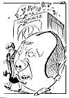

|
Dagens Inge:  Inge-galleri Tidligere artikler |
Dagens ledere Morgen: Mer "penger på bok" Ski-fadese! |
Aften: Styringsløst i Oslo Ap. |
|
Kommentar Nordisk EU-strategi en illusjon PARADOKS: Med sin B-status fremstår Norge som Den europeiske unions mest pliktoppfyllende "medlem". LARS HELLBERG Artikkelforfatteren er politisk kommen- tator i Aftenposten.
Schengen-debatt i kjent toneleie
|
I dag Rattsø: Reform eller havari? SYND om Rattsø-utvalgets forslag kveles i partitaktiske posisjoneringer. ODVAR NORDLI Tidligere statsminister
| |
|
Kronikk Norge og fremtiden for nordområdene IVAR YTRELAND Den politiske debatten om nordområdene har nærmest ligget død siden 1930-årene, mener dagens kronikør. Vi mangler en klar strategi for hva Norge som viktig arealdisponent vil gjøre der, med de store ressurser som områdene rommer. Det er på høy tid at Norge inntar en lederrolle og etablerer et konstruktivt samarbeid med både EU, Island og Grønland. Ytreland, som er tidligere fylkesordfører i Sør-Trøndelag, er en av våre fremste kjennere av disse spørsmål.
|
||